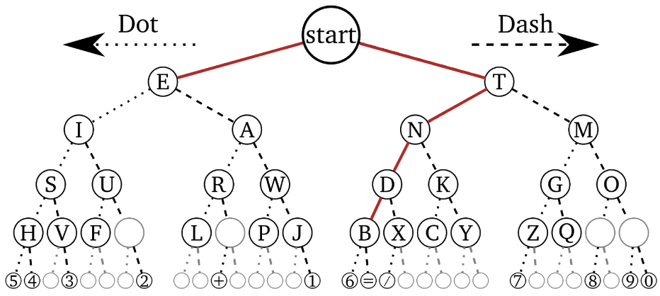
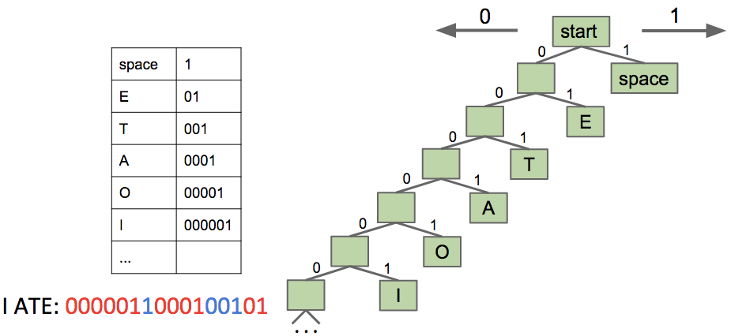
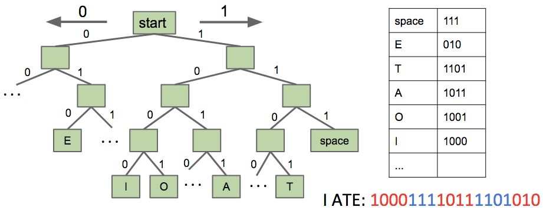
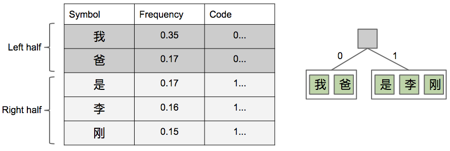
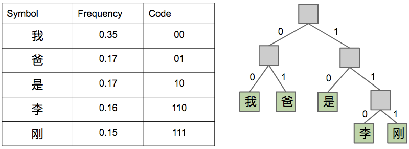
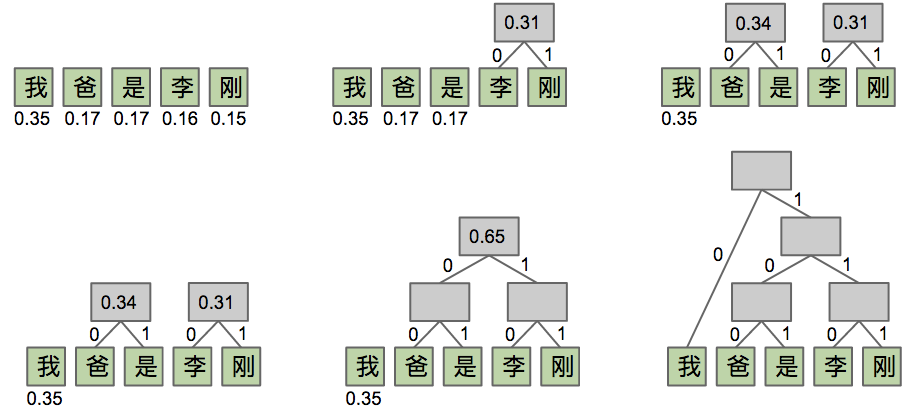
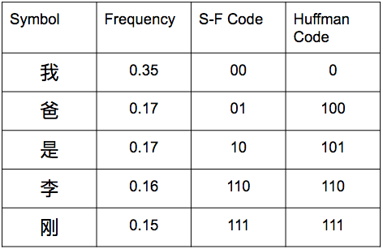

Lecture 38 - 04/24
Compression
- This lecture provides insight into how we compress/decompress files losslessly (without loosing any information), for example with zip files
- Strings are represented as sequences of characters; each character is represented with 8 bits (for example, 'd' is 01100100)
- Instead of using so many bits to represent each character/symbol, we could use shorter bit sequences with different codewords to represent each symbol.
- Converting from original bitstreams to codewords will compress, and creating a program that maps each compressed codeword to its corresponding symbol will decompress
- Example of codewords representing symbols is Morse Code (where code sequences of dots and dashes represent character symbols):
 - Problem with Morse Code: it isn't prefix-free:
- A stream of dots and dashes doesn't definitively tell us where one codeword ends and the next begins (for example, '--.--.' could encode 'meme' or 'gg')
- A prefix-free code system is one in which no codeword is a prefix of another
- Example 1:
 - Example 2:
 - The above example prefix-free codes are better for some words and worse for other words. If we have a message to send with a large number of 'E' symbols, the Example 1 code will be superior, as we only need two bits to represent each 'E', while Example 2 would need three for each 'E'. With similar reasoning, a message with many 'I' symbols would be better encoded with Example 2
- How do we find the best possible prefix-free code for a given text?
- Initial approach: Shannon-Fano Coding:
- Count the relative frequencies of all characters in the message (count what percentage of all characters are 'A', 'B', 'C', ...)
- Split these relative frequencies into two halves, each of roughly equal frequency. Give the 'left' half a leading '1' bit, and the 'right' half a leading '0' bit
- Repeat the splitting now on each of our halves, creating further sub-splits of the frequencies and assigning leading bits to the characters, until each split has only one character's frequency in it
- Example:


- Optimal approach: Huffman Coding:
- Like before, calculate relative frequencies of all symbols
- Assign each symbol to a node of weigh equivalent to that symbol's relative frequency
- Take the two smallest nodes and merge into a 'supernode' of weight equal to the sum of its two children's weights
- Repeat, until we have a full tree structure
- Example:

- Comparison - Huffman Coding is strictly better than Shannon-Fanning Coding (no downside, for analysis take CS 170):

- Data structure to store encoding and decoding:
- For encoding (convert bitstream to a compressed bitstream), we can use an array structure, or a map
- When our symbols are elements that can themselves be used as indices (for example characters with ASCII values), we should use an array structure - something like
BitSequence[]
- This would be better than a structure like
HashMap<Character, BitSequence>, as with HashMaps we have to compute hashCode, do a modular operation, and then lookup in a bucket's linked list - Array lookups are faster, and we would only be loosing memory efficiency with an array structure if we end up not using some characters in the alphabet
- However, when our symbols can't be used efficiently as indices in an array structure, it is better to use a map structure for encoding - something like
HashMap<Symbol, BitSequence>
- For decoding, we can use a trie:
- We want to look up the longest matching prefix, which is a problem tries are optimal for
- As we traverse through the compressed bitstream, do a prefix match in the trie for our sequence of compressed bits. Keep adding more bits from the compressed stream in the prefix lookup, until the trie only finds a single prefix match (a leaf of the trie structure)
- At the leaf, we store the corresponding uncompressed original symbol's bit sequence. Thus, whenever a leaf is reached, we have found the appropriate uncompressed bit sequence for a given compressed bit sequence. We now reset our prefix lookup sequence and continue to decode the rest of the bitstream
- Encoding and decoding in the real world:
- In actual practice, for every possible input file/message to compress, we create a unique code just for that file (the code is optimal for this specific input), and send this along with our compressed file bitstream. This is more efficient than having some single standardized code for all inputs
- More optimal to have a unique code because the cost of sending the code along with the compressed file is similar to a constant factor - the space consumed by sending the code over will not increase/scale as the input increases in size.
- Summary of Compression:
- Given an input file, we first find relative frequencies of each symbol
- We then build an encoding map and a decoding trie, using Huffman Coding as discussed above
- Create some
output.huf file that will contain the compressed file - Write the decoding trie code to
output.huf - Using our encoding map, write the codeword for each symbol in the input file to
output.huf
- Summary of Decompression:
- Given an input compressed bitstream, read in the decoding trie
- Then, use codeword bits to walk down the trie structure, outputting a corresponding symbol's uncompressed bit sequence whenever a leaf is reached (meaning only one prefix match found)
Compression Theory
- It is impossible for an algorithm to exist that compresses a bitstream by 50%
- Argument 1: if this were true, we would be able to compress some input with symbols of length X to a compressed stream C1 of length X/2, and in turn compress C1 into a doubly-compressed stream C2 of length X/4, ... until we have a stream containing symbols of length 1. This is simply impossible
- Argument 2: There are much fewer shorter bitstreams than long ones, so guaranteeing compression even once by 50% is impossible:
- We have 21000 possible 1000-bit sequences
- Only 1+2+4+...+2500=2501−1 bitstreams exist of length ≤500
- This means intuitively that we have 21000 things to put in only 2501−1 places
- Thus, roughly only 210002501−1≈2499 of our possible 1000-bit sequences can be of size ≤500 (in other words, compressed by 50%)
- We don't save space by having a special code that represents a very large uncompressed sequence with a compressed small sequence
- For example, having a compressed sequence of size three bits decompress into a movie file of billions of bits will not actually save space!
- Reason why: we need to also transfer over the decompression algorithm, and with such a scheme, we would have a massive decompression algorithm. No space saved.
LZW Style Compression
- Extra content
- Idea: each codeword represents multiple symbols
- We initially start with a trivial codeword list, where each codeword corresponds to a single symbol
- As we find an occurence of codeword X, we record it and add a new codeword Y to our codeword table, where Y corresponds to X concatenated with the next symbol
- Visualization: https://docs.google.com/presentation/d/1U8XO6CWfcU4QgrFOZmGjAgmaKxLc8HXk6qB1JQVlqrg
Lossy Compression
- Extra content
- Several formats, such as JPEG, MP3, and MP4 are all lossy - they loose information during the compression
- The formats are carefully designed to discard very minor, subtle parts of media that are not important to the actual media content, from a human sensory point of view
- For example, high frequencies that can't be heard by humans are discarded from audio, while in video very minor changes in color are removed (low frequencies)
- Note: study this in EE 16B with tools such as singular value decomposition (SVD)